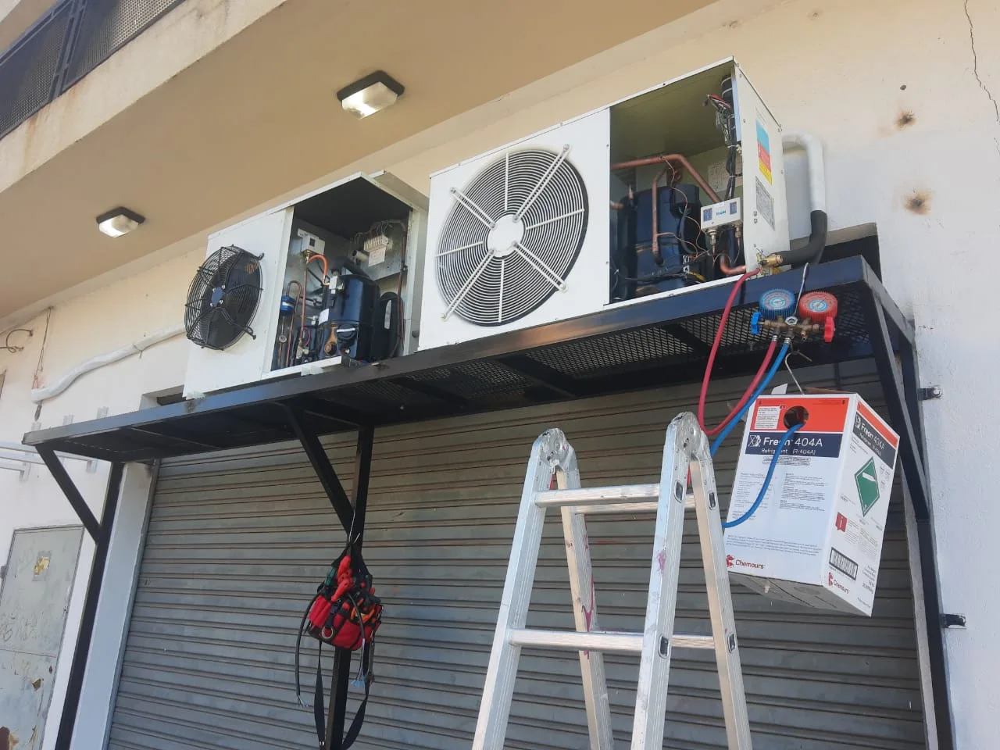
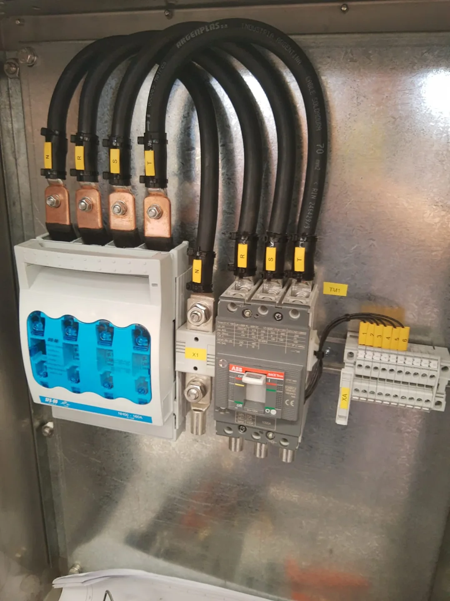
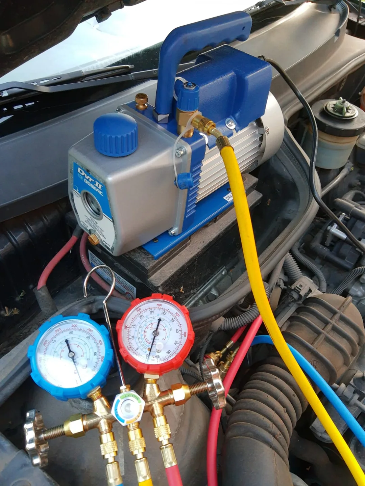
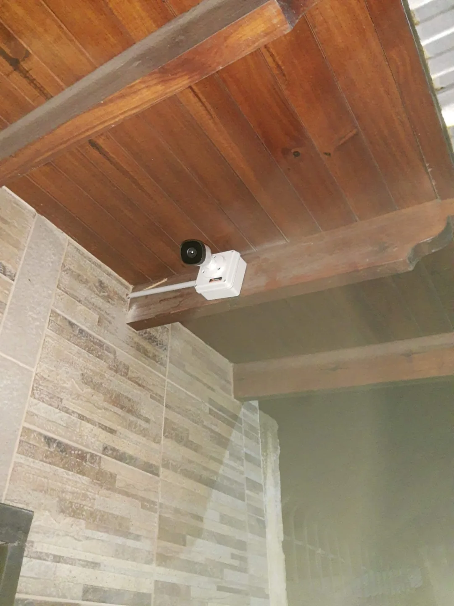

01
Electricidad
Instalaciones que dan tranquilidad.
Tableros y protecciones
Instalación, revisión y reparación de tableros eléctricos.
Instalaciones y reparaciones
Cableado, iluminación y solución de fallas eléctricas.
Consultar por este servicioTU TÉCNICO EN ZONA SUR
Electricidad y refrigeración para tu casa y tu comercio. Un solo contacto para resolver lo que necesitás.

SOLUCIONES REALES. TRABAJOS REALES.
El detalle haceDesde una falla eléctrica hasta un equipo que dejó de enfriar. Contanos qué pasa y coordinamos cómo resolverlo.
Instalaciones que dan tranquilidad.
Instalación, revisión y reparación de tableros eléctricos.
Cableado, iluminación y solución de fallas eléctricas.
Consultar por este servicio
02Que todo vuelva a funcionar.
Diagnóstico y reparación de equipos de refrigeración.
Instalación, mantenimiento y reparación de equipos.
Consultar por este servicio
03Tu espacio, más conectado.
Montaje y conexión de cámaras para hogares y comercios.
Contanos qué necesitás y coordinamos el trabajo.
Consultar por este servicioMandanos por WhatsApp tu consulta, tu zona y, si tenés, una foto del problema.
Evaluamos el trabajo y acordamos los detalles y la disponibilidad.
Electricidad, refrigeración o seguridad: atención enfocada en tu necesidad.
Una selección de instalaciones y reparaciones de Waisan. Fotos propias, tomadas durante los trabajos.
Armado y conexionado de tablero de control
WAISAN · TRABAJO REALInstalación de unidades exteriores de aire acondicionado
WAISAN · TRABAJO REALDetalle del cableado de un tablero eléctrico
WAISAN · TRABAJO REALDiagnóstico de refrigeración con instrumental
WAISAN · TRABAJO REALInstalación de cámara de seguridad exterior
WAISAN · TRABAJO REALInstalación de iluminación en un local
WAISAN · TRABAJO REALInstalación de aire acondicionado split
WAISAN · TRABAJO REALDetalle de conexiones y borneras eléctricas
WAISAN · TRABAJO REALMontaje de protecciones en gabinete eléctrico
WAISAN · TRABAJO REALCon base en Quilmes, nos movemos por la zona para atender hogares y comercios.
Consultar por mi zona ↗¿Estás en otra localidad cercana? Consultanos.
Escribinos y contanos qué necesitás. Te respondemos para coordinar el trabajo.
11 5002-7041 ↗Quilmes y Zona Sur, Buenos Aires
Consultá por horarios y disponibilidad.
Si es una urgencia, contanos qué pasó.
Completá los datos y seguimos por WhatsApp.